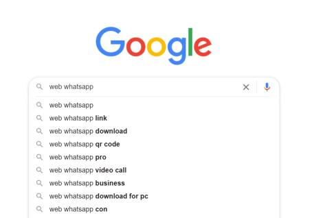
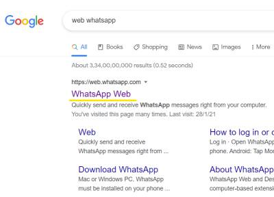
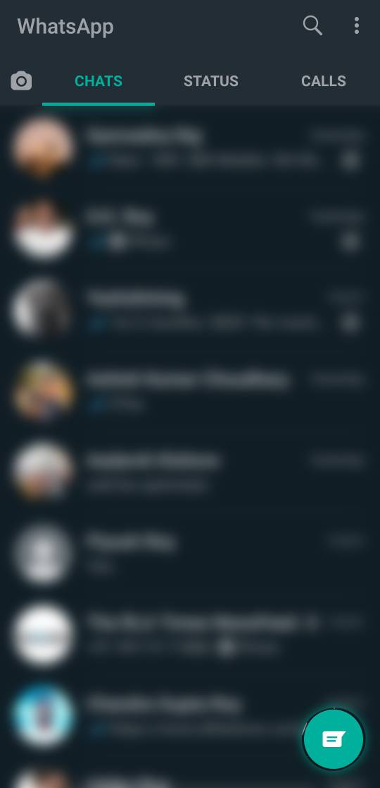
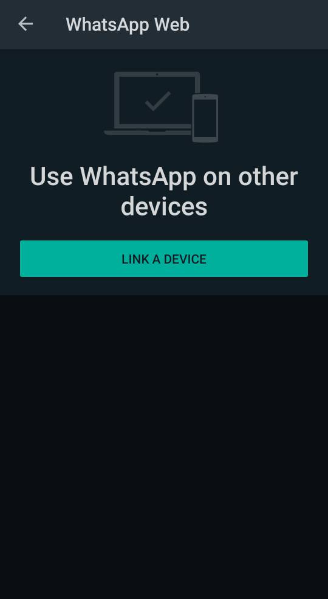
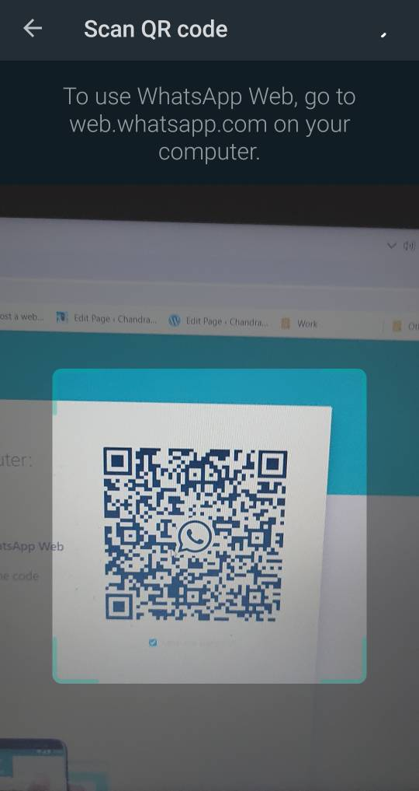
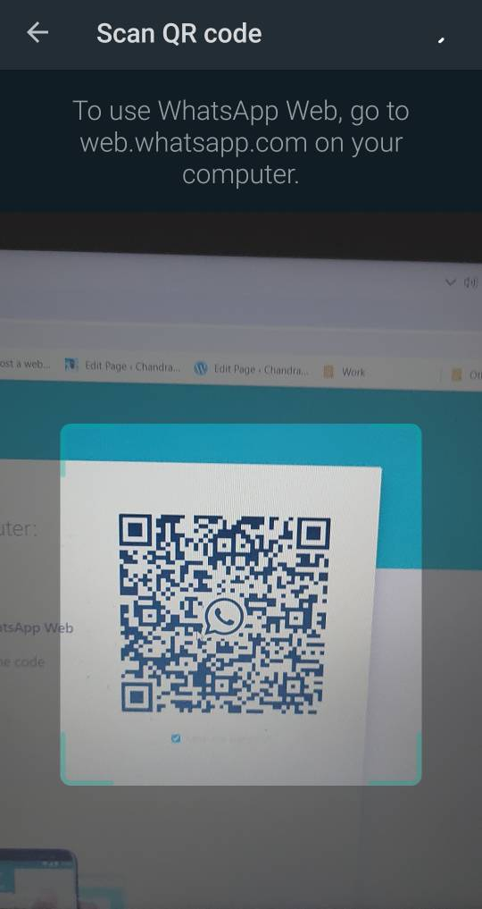
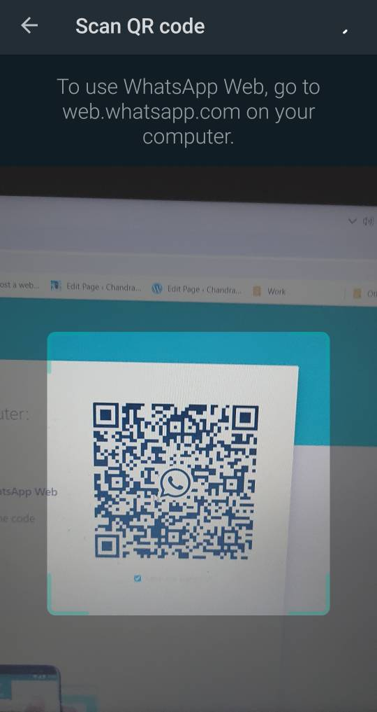
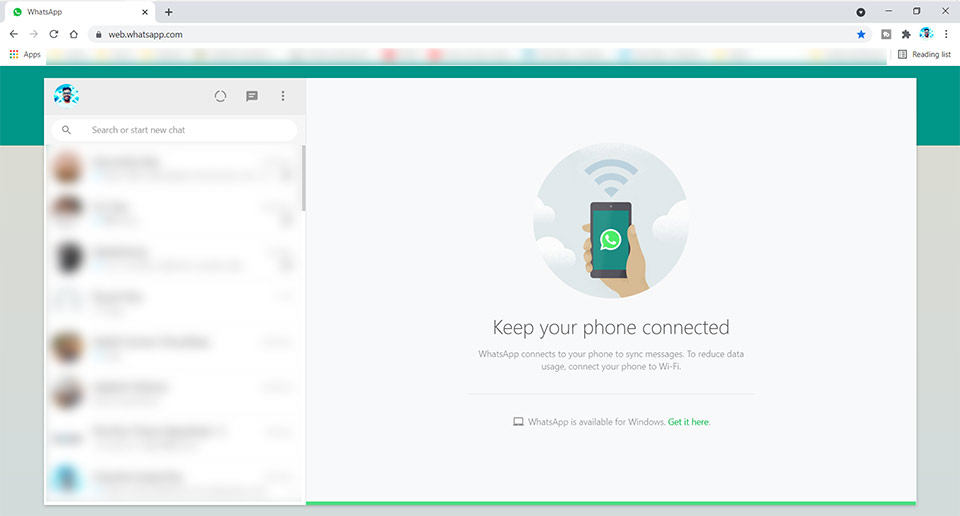

Simplest Way!
Step 1: Search web WhatsApp on Google
Step 2: Select the First Option, Tap/Click Once
This window will appear

Step 3: Open WhatsApp in your phone
Step 4: Click on three dots on the right side and select Web WhatsApp

Step 5: Select Link a Device and Scan the Qr code on the pc screen

 


Done, within a minutes you have logged your WhatsApp into your PC.
Now, after using you can simply remove access to pc from your phone, whenever you want.
For that, go back to WhatsApp and click on three dots --> WhatsApp Web.
And Remove access by Selecting the logged In browser -->Click Log Out.